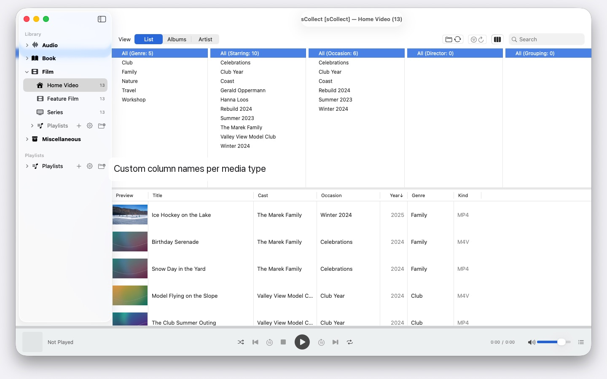

sCollect
Music, Movies, Books & More
Coming to the Mac App Store · October 2026Thousands of artists, several Macs, any macOS from 14 on: sCollect organizes music, films and books and writes your details into the files. No account, no cloud.

What sets it apart
It writes back
What you type into the editor doesn’t just land in a database — it lands in the file’s own metadata: ID3v2.4 in MP3, MP4 and M4A tags, Vorbis comments in FLAC and OGG, AIFF and WAV text chunks, DSF, and EXIF, IPTC and XMP in images. Your work stays with you, even if you stop using sCollect one day.
Order that takes care of itself
On import, every file goes where it belongs — by media type, artist, album or date. Each media type may have a folder of its own, even on another drive. Or leave your collection where it is and link it: linked files are never touched.
Thousands of artists, no endless scrolling
The column browser groups long lists by initial letter — A, AB, ABB — so three clicks take you there. With multiple selection in every column.
Several Macs, one collection
A library can register copies. Changes to the main library are carried over into every copy it can reach, files and tags included — and made up later if a copy is offline. Whichever macOS each Mac runs makes no difference.
Less busywork
Find and replace across every field, with a preview. Duplicate detection across a whole category, with a clear verdict on which version is better. Missing files are marked instead of hunted for.
On your Mac, and nowhere else
No accounts, no cloud, no analytics, no advertising. sCollect works only with the folders you give it — what you collect and how you organize it stays yours.
Also collections that aren’t media files. Coins, stamps, models — photographed and described, in categories you name yourself.
- Requires macOS 14 or later
- 25 languages, each with complete help
- Support: SwiftAppsBavaria@gmx.net
More apps
sName2Date
Take the date from the file name and write it into photos, movies and audio recordings as the capture date.
SwiftRename
Rename files in batches — by capture date, numbered consecutively, or sorted into year and month folders.
sVectorLift
Open, view, and save old vector clip art as SVG — CorelDRAW, Windows Metafile, and CGM.